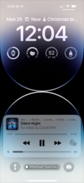
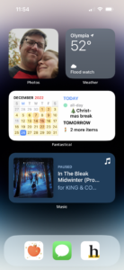
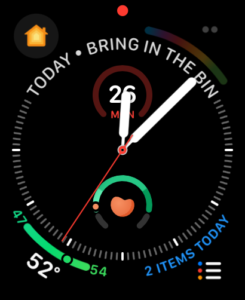

Coxmas 2022
Lock Screen
My lock screen is pretty simple. The top widget is Fantastical. Below the time, Battery, Gentler Streak, Weather, and Streaks. Nearly every app's notifications are relegated to a few summaries so that if my phone makes a noise or lights up, I know it's important.
Home Screen
I am living the all-widget home screen life. All apps that are not in the dock live in App Library. Everything but the Photos widget is a stack. The bottom one has three widgets: Music, Overcast, and Endel. The top right also has three: Weather, Maps, and Streaks. And the middle one is Fantastical and Reminders.
Watch Face
Not traditionally a Coxmas item, but Apple Watch face choices feel like they should be equally open to criticism. Mine is very close to my iPhone lock screen with the additiono f Home and Reminders.